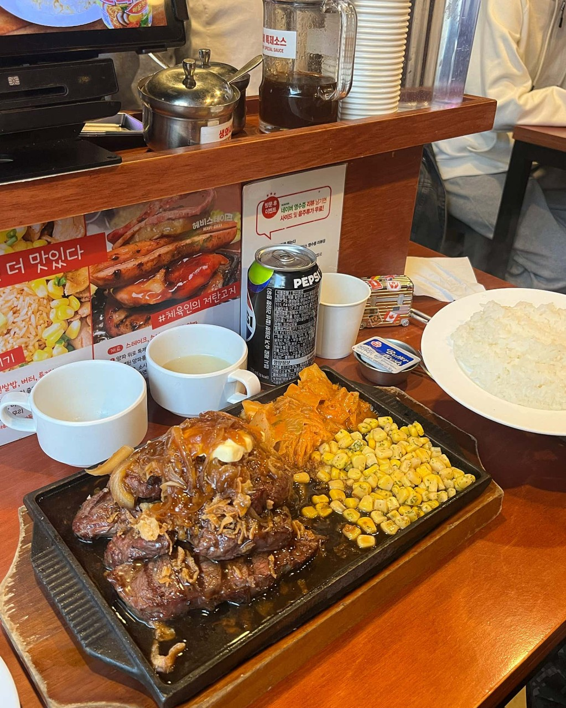

소개
놀다가 배고프면 푸짐한 고기가 최고죠! 적당한 가격에 고급진 스테이크를 먹을 수 있으면 얼마나 좋을까요? 그런 분들께 추천드리는 맛집, "헤비스테이크 안산중앙점"입니다.
보장된 맛 : 잡내 없이 신선한 고기로 구운 스테이크에 올려진 소스와 버터 한 조각, 그리고 옆에 놓인 푸짐한 사이드! 리뷰도 호평일색일 정도로 맛은 보장되어 있습니다.
적당한 가격 : 스테이크라고 하면 웬만한 음식점에서는 3만원이 훌쩍 넘는 가격이 생각나시죠? 헤비스테이크는 15000원이 넘지 않는 가격에도 맛있는 스테이크를 즐길 수 있습니다.
고급진 구성 : 경양식 스타일의 스프로 시작해서 밥과 사이드가 함께 제공되는 스테이크로 이어지는 구성은 클래식하면서도 고급진 느낌을 줍니다. 마치 한 끼 대접받는 기분이예요.
메뉴 추천
- 비프 스테이크 레귤러(180g) : 헤비스테이크의 대표 메뉴인 비프 스테이크는 13,500원이라는 착한 가격을 가진 가성비 메뉴이기도 합니다. 만약 고기 양이 부족하실 것 같다면 20,300원의 가격에 270g이 제공되는 미디엄 사이즈도 추천드립니다.
- 파워 함박 세트 : 100원짜리 동전 하나도 아까운 학생들을 위한 메뉴도 있습니다! 9,900원의 파워 함박 세트는 좋은 맛에 싼 가격까지 갖춘 최고의 가성비 메뉴입니다.
- 토시살 스테이크 (270g) : 오늘은 돈을 좀 쓰더라도 좋은 걸 먹고 싶다면? 한정판매 중인 토시살 스테이크를 추천드립니다. 가격은 26,900원으로 비싸지만, 부위가 부위인 만큼 돈이 아깝지 않는 맛입니다.
헤비스테이크 안산중앙점 가는 길
주소: 경기 안산시 단원구 예술대학로 11
자가용 이용 시: 무료는 아니지만 바로 앞에 공영주차장이 있습니다. 식사만 하고 이동하실 예정이라면 공영주차장을 이용하시는 것도 나쁘지 않은 선택입니다.
대중교통 이용 시: 4호선 중앙역에서 도보로 7분 거리로 굉장히 가깝습니다! 주변에 놀 거리도 많으니, 지하철을 통해 방문하시면 편합니다.
"기분이 저기압일 땐 고기 앞으로"라는 말도 있잖아요. 오늘은 스테이크 한 번 썰면서 소중한 사람과 함께 시간을 보내 보는 건 어떨까요?
← 관광지 목록으로 돌아가기